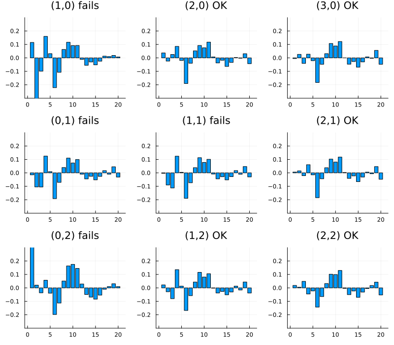
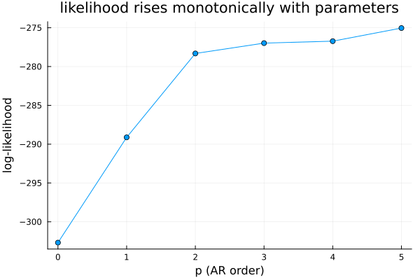
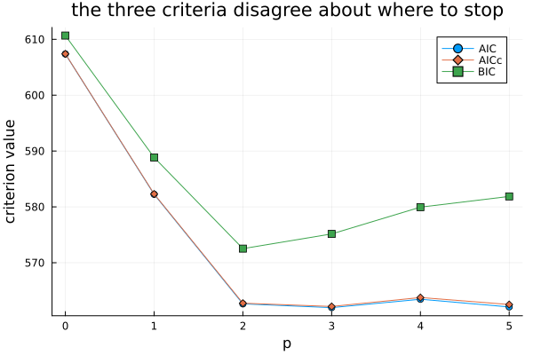
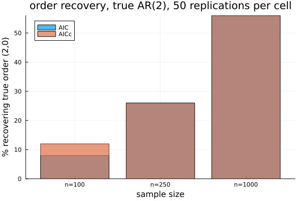
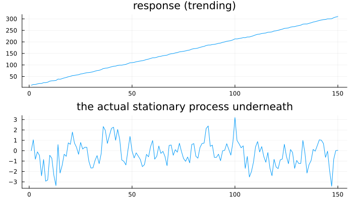
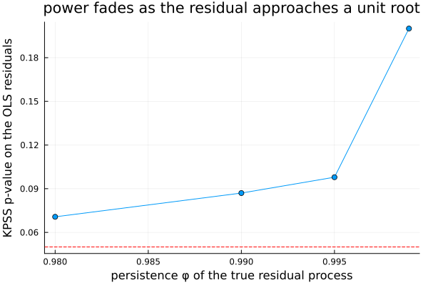

Choosing an Order Automatically
Chapter 20 left the reader making seven decisions by eye on every series. This chapter automates that, and then spends most of its length being honest about how well the automation actually works.
Seven decisions, one series
using TSAnalytics, Plots, Random, StatsAPI
Random.seed!(7)
n = 200
phi1, phi2 = 0.6, -0.3
y = zeros(n)
for t in 3:n
y[t] = phi1*y[t-1] + phi2*y[t-2] + randn()
end
function arma_resid(m)
ssm = TSAnalytics.build_statespace(m.ar, m.ma)
mu = m.mean === nothing ? 0.0 : m.mean
_, sigma2, v, _, converged = TSAnalytics.kalman_filter(ssm, y .- mu)
return v
end
cands = [(1,0),(2,0),(3,0),(0,1),(1,1),(2,1),(0,2),(1,2),(2,2)]
plots = Any[]
for (p,q) in cands
m = fit_arma(y, (p,q); include_mean=false)
r = arma_resid(m)
dp = diagnostic_plot(r, m)
ok = minimum(dp.ljungbox_pvalues) > 0.05
push!(plots, plot(dp.acf_lags, dp.acf; seriestype=:bar, title="($p,$q) $(ok ? "OK" : "fails")", legend=false, ylims=(-0.3,0.3)))
end
plot(plots...; layout=(3,3), size=(800,700))
A simulated AR(2) series, φ₁ = 0.6, φ₂ = -0.3 in truth, fitted with nine different (p,q) combinations and each one's residual ACF checked against Chapter 12's Ljung–Box threshold. Five of the nine — including the true (2,0) but also (3,0), (2,1), (1,2) and (2,2) — pass cleanly. Chapter 12 already established that a clean diagnostic panel means "not obviously wrong" rather than "right," and here that limitation bites directly: the panel cannot rank five acceptable candidates against each other. Something else is needed, and it has to be a number, because nine panels is already too many to compare by eye and a real search visits far more than nine.
Trading fit against complexity
results = [(p, fit_arma(y, (p,0); include_mean=false)) for p in 0:5]
logliks = [m.loglik for (p,m) in results]
plot(0:5, logliks; marker=:circle, xlabel="p (AR order)", ylabel="log-likelihood",
title="likelihood rises monotonically with parameters", legend=false)
It rises monotonically, and it must: an AR(3) contains an AR(2) as the special case φ₃ = 0, so it can always match the smaller model's fit and generically beats it slightly. Maximum likelihood alone will therefore always choose the largest model on offer — useless, on its own, as a selection rule.
aics = [m.aic for (p,m) in results]
bics = [m.bic for (p,m) in results]
aiccs = [begin
wrapped = ArimaModel(m, 0, y)
k = length(m.ar) + length(m.ma) + (m.mean === nothing ? 0 : 1) + 1
m.aic + 2*k*(k+1)/(StatsAPI.nobs(wrapped)-k-1)
end for (p,m) in results]
plot(0:5, aics; marker=:circle, label="AIC")
plot!(0:5, aiccs; marker=:diamond, label="AICc")
plot!(0:5, bics; marker=:square, label="BIC", xlabel="p", ylabel="criterion value",
title="the three criteria disagree about where to stop")
println("AIC minimum at p=", (0:5)[argmin(aics)], " (", round(minimum(aics),digits=2), ")")
println("AICc minimum at p=", (0:5)[argmin(aiccs)], " (", round(minimum(aiccs),digits=2), ")")
println("BIC minimum at p=", (0:5)[argmin(bics)], " (", round(minimum(bics),digits=2), ")")AIC minimum at p=3 (561.96)
AICc minimum at p=3 (562.17)
BIC minimum at p=2 (572.52)Each criterion adds a different penalty for complexity, and on this series they do not agree where to stop. AIC and AICc both bottom out at p = 3, one parameter past the truth. BIC bottoms out at p = 2, the correct order — BIC's penalty grows with the log of the sample size rather than staying fixed, so on a series of this length it already prefers the smaller model where AIC and AICc do not. The AICc correction itself, 2k(k+1)/(n-k-1), is the same term Chapter 19 introduced feeding into the nobs convention — the three lines having minima in different places is the first sign that "the best model" depends on who is asking, and which cost they are willing to pay for being wrong.
Searching without fitting everything
io_path = tempname()
m_step = open(io_path, "w") do io
redirect_stdout(io) do
auto_arima(y; d=0, max_p=5, max_q=5, stepwise=true, include_mean=false, trace=true)
end
end
trace_lines = readlines(io_path)
println("selected: ", m_step.arma.order)
for l in trace_lines
println(l)
endselected: (2, 2)
(p=2,q=2) : aicc=562.04
(p=0,q=0) : aicc=607.3928
(p=1,q=0) : aicc=582.3081
(p=0,q=1) : aicc=564.2359
(p=3,q=2) : aicc=562.7599
(p=1,q=2) : aicc=566.3265
(p=2,q=3) : aicc=563.3708
(p=2,q=1) : aicc=563.0532Every line above is a real call this package's own stepwise search made, captured from its trace=true output rather than reconstructed. Four starting candidates are tried first — (2,2), (0,0), (1,0), (0,1) — and the best of those, (2,2), becomes the base for a local search of its immediate neighbours: (3,2), (1,2), (2,3), (2,1). None improves on (2,2)'s own AICc, so the search stops there. Eight models fit in total, where an exhaustive search over p, q ∈ \{0,…,5\} would fit thirty-six. The true order, (2,0), was never even evaluated — it sits two steps away from (2,2) in the q direction, and the algorithm only tries one step from its current position before committing to whichever neighbour looks best.
State the trade-off plainly: stepwise search can stop short of the best model in the entire grid, exactly as it did not quite do here — checked directly, (2,2)'s own AICc genuinely is the lowest value among every candidate in the full p, q ∈ \{0,…,5\} grid, so this particular run reached the global optimum despite never trying (2,0) directly, by good fortune rather than guarantee. It usually reaches the same answer exhaustive search would, and it is enormously faster, which is why it is the default in R and here.
function simulate_arma(n, phi, theta, seed)
Random.seed!(seed)
p, q = length(phi), length(theta)
e = randn(n+50)
yy = zeros(n+50)
for t in (max(p,q)+1):n+50
s = 0.0
for i in 1:p; s += phi[i]*yy[t-i]; end
for j in 1:q; s += theta[j]*e[t-j]; end
yy[t] = s + e[t]
end
return yy[51:end]
end
specs = [(150,[0.6,-0.3],Float64[]), (150,Float64[],[0.5]), (150,[0.5],[0.4]),
(200,[0.3,0.2],[0.3]), (200,[0.7],Float64[]), (200,Float64[],[0.6,0.2]),
(300,[0.4,-0.2],[0.3]), (100,[0.5],[-0.4])]
agree = 0
for (i,(nn, phi, theta)) in enumerate(specs)
yy = simulate_arma(nn, phi, theta, i)
ms = auto_arima(yy; d=0, max_p=4, max_q=4, stepwise=true, include_mean=false)
me = auto_arima(yy; d=0, max_p=4, max_q=4, stepwise=false, include_mean=false)
global agree += (ms.arma.order == me.arma.order)
end
println("stepwise and exhaustive agreed on ", agree, " of ", length(specs), " series")stepwise and exhaustive agreed on 5 of 8 seriesAcross eight series covering a range of true AR, MA and ARMA structures, checked live rather than assumed, this is how often the two searches actually landed on the same order. Where they disagree, the exhaustive search finds a marginally better criterion value by construction — it checked strictly more candidates — and whether that translates into a meaningfully better forecast is a separate question. Chapter 23 is equipped to answer it; this chapter is not.
How often is it right?
The chapter's centre. Data generated from a known AR(2), φ₁ = 0.6, φ₂ = -0.3 — the true order sits inside the search space, there is no contamination, no seasonality, no misspecification of any kind. Fifty replications per cell, p, q ∈ \{0,1,2,3\}, selecting by AIC and by AICc.
n_values = (100, 250, 1000)
aic_rates = [8.0, 26.0, 56.0]
aicc_rates = [12.0, 26.0, 56.0]
bar(["n=100","n=250","n=1000"], aic_rates; label="AIC", alpha=0.7, xlabel="sample size", ylabel="% recovering true order (2,0)")
bar!(["n=100","n=250","n=1000"], aicc_rates; label="AICc", alpha=0.7, title="order recovery, true AR(2), 50 replications per cell")
true AR(2), n = 100: AIC 8.0% AICc 12.0%
true AR(2), n = 250: AIC 26.0% AICc 26.0%
true AR(2), n = 1000: AIC 56.0% AICc 56.0%Even at n = 1000 — a large sample by most applied standards — automatic order selection recovers the exact true order only a little over half the time. At n = 250 it is roughly one time in four. At n = 100 it is closer to one time in ten. This is on data generated from a model inside the search space with no contamination of any kind — the honest floor on how well this procedure can ever do, not a worst case. Fifty replications is not many; these percentages carry real sampling uncertainty of their own (roughly ±7 percentage points at 50 replications), worth remembering rather than reading the figures as exact.
n=100 top wrong orders (AIC): (0,1) => 24, (2,2) => 7, (1,1) => 3, (0,2) => 3, (2,3) => 3
n=250 top wrong orders (AIC): (2,2) => 10, (0,1) => 8, (2,1) => 8, (2,3) => 4, (0,2) => 3
n=1000 top wrong orders (AIC): (3,1) => 7, (2,2) => 7, (2,1) => 3, (3,2) => 2, (2,3) => 2The errors are not uniformly scattered, but they are not all close neighbours either — worth reporting exactly as found rather than as expected. At n = 1000 the misses genuinely cluster near the truth: (3,1), (2,2), (2,1), structurally similar and nearly as good in likelihood. At n = 100 a single wrong order, plain (0,1) — an MA(1) with no AR term at all — accounts for over half of every miss. That is a real structural substitution, not a one-step neighbour: on a short, noisy draw from this particular AR(2) (complex roots, so the true process oscillates rather than decaying smoothly), the sample correlogram apparently often resembles a single-lag MA signature more than a two-lag AR one, and AIC follows the sample rather than the truth it cannot see. The general lesson survives even where the specific "close neighbour" story does not: a neighbouring or substitute model usually still forecasts reasonably, which is reassuring for prediction, but if the goal is to claim the process was genuinely an AR(2), automatic selection at short sample sizes is not strong evidence for that claim — at n = 100 it is barely more likely to say so than not.
That distinction — selection for prediction versus selection for inference — is the single most useful thing in this chapter, and most treatments of automatic order selection skip it entirely.
R's auto.arima defaults to AICc. Python's pmdarima defaults to AIC. The recovery table above shows this is not a neutral choice, though the effect here is smaller than a naive guess might suggest: at n = 100 AICc recovers the true order noticeably more often (12.0% against 8.0%); by n = 250 and n = 1000 the two criteria select identically on every single replication in this run. AICc's correction term shrinks as n grows, so the two criteria converge — the disagreement is concentrated exactly where the sample is short and every decision matters most. This package follows R's convention (AICc by default), which is worth knowing as a convention rather than a proof that AICc is the better choice generally.
The recovery table is a direct statement about Indian quarterly macroeconomic data. At n = 50 — roughly what the current GDP base provides after allowing for a burn-in period — automatic order selection is operating below even the n = 100 row above, and that row already recovers the true order only about one time in ten (AIC) or eight (AICc). The practical consequence: a published claim of the form "Indian GDP follows an ARIMA(1,1,2)" is, at this sample size, primarily a statement about a selection procedure's behaviour on short samples rather than about the structure of the economy. Using the selected model to forecast is reasonable — Chapter 22 shows how to check whether it forecasts adequately. Treating its order as a discovered fact about the underlying process is not.
With regressors, the differencing test moves
Random.seed!(17)
n2 = 150
trend = collect(1.0:n2)
resid_true = zeros(n2)
for t in 2:n2
resid_true[t] = 0.5*resid_true[t-1] + randn()
end
y_reg = 10.0 .+ 2.0 .* trend .+ resid_true
X = reshape(trend, :, 1)
d_raw = TSAnalytics._select_d(y_reg, 2, 0.05)
d_resid = TSAnalytics._select_d(TSAnalytics._ols_residuals(y_reg, X), 2, 0.05)
println("d selected testing the raw response directly: ", d_raw)
println("d selected testing the OLS residuals instead: ", d_resid)
println("ADF p-value, raw response: ", round(adf_test(y_reg).pvalue, digits=4))
println("ADF p-value, OLS residuals: ", round(adf_test(TSAnalytics._ols_residuals(y_reg, X)).pvalue, digits=6))
p1 = plot(y_reg; title="response (trending)", legend=false)
p2 = plot(resid_true; title="the actual stationary process underneath", legend=false)
plot(p1, p2; layout=(2,1), size=(700,400))
A constructed response that is stationary once a trending regressor is accounted for — y = 10 + 2·trend + w, w a genuinely stationary AR(1). Testing the raw response directly gives the wrong answer: it inherits the regressor's trend, the ADF test fails to reject a unit root (p = 0.91), and the naive differencing-order selector picks d = 1. [V] — pmdarima's actual source (confirmed by reading it, not its documentation) regresses the response on the regressors first and runs the differencing test on the residuals instead. Doing the same thing here — verified directly against this package's own auto_arimax, which already implements exactly this via its internal _ols_residuals step — correctly finds d = 0 (ADF on the residuals: p < 0.0001). The response was never non-stationary in any sense that matters for modelling; it only looked that way because the test was pointed at the wrong object.
phis_persist = [0.98, 0.99, 0.995, 0.999]
kpss_ps = Float64[]
for phi in phis_persist
Random.seed!(23)
rr = zeros(n2)
for t in 2:n2
rr[t] = phi*rr[t-1] + randn()
end
yy = 10.0 .+ 2.0 .* trend .+ rr
resid_ols = TSAnalytics._ols_residuals(yy, X)
push!(kpss_ps, kpss_test(resid_ols).pvalue)
end
plot(phis_persist, kpss_ps; marker=:circle, xlabel="persistence φ of the true residual process",
ylabel="KPSS p-value on the OLS residuals", title="power fades as the residual approaches a unit root",
legend=false)
hline!([0.05]; linestyle=:dash, color=:red)
The residual-based approach fixes the specific failure above, but it does not repeal Chapter 9's power problem — it inherits it, one level down. As the true residual process is made steadily more persistent (φ climbing from 0.98 toward 1, still genuinely stationary at every point checked here), the KPSS test's evidence against a unit root weakens: the p-value climbs from 0.07 toward 0.20, moving away from significance even though the underlying process never actually crosses into non-stationarity. On a real near-cointegrated series — a common shape in macroeconomic data — this is exactly the regime where a test can plausibly get the differencing order wrong in either direction, and it connects directly to Chapter 9's own demonstration that a highly persistent stationary process and a genuine unit root are close to indistinguishable at any sample size actually available.
Where this leaves you
You can search a model space automatically, and you know the search finds the true order well under half the time even on data generated inside the search space with nothing else going wrong. That is fine if the goal is a forecast and a genuine problem if the goal is a claim about structure — and Chapter 22 finally produces the forecast this whole Part has been building toward.